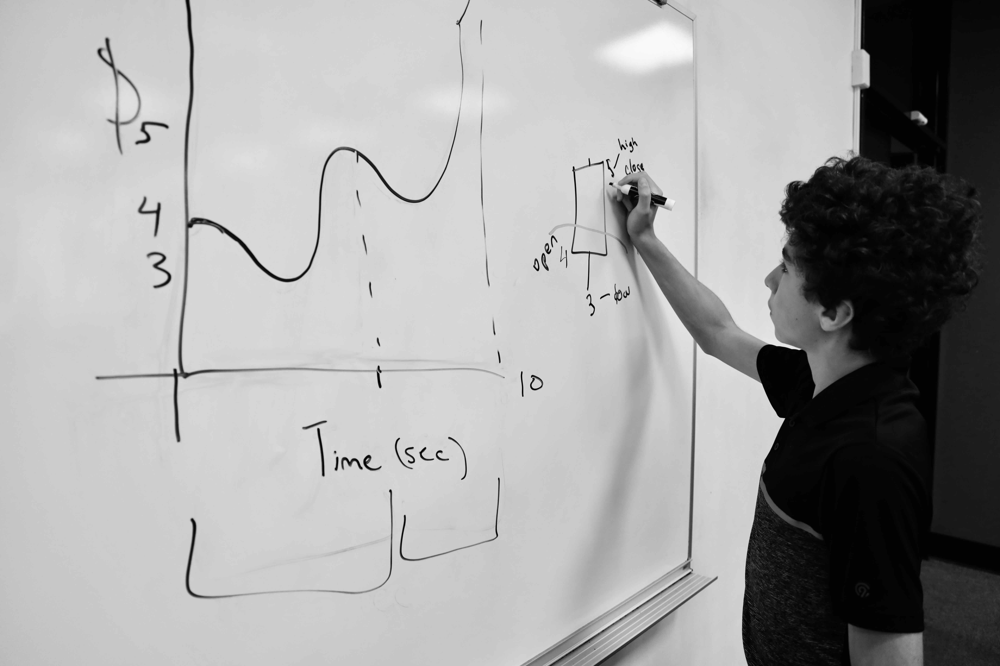

Lucas Raicu
Junior at Glenbrook South High School, Glenview, IL -- Class of 2026
I am always searching for new challenges in my academics, music, and sports. And appreciate every obstacle thrown my way, as I know I will be stronger for it.

My name is Lucas Raicu and I live in Glenview Illinois.
As a junior at Glenbrook South High School, I am deeply passionate about music, sports, and academics.
I hold prominent roles in the soccer and tennis program, while also leading our symphonic orchestra as the co-concert master.
Additionally, I find joy in playing chess and ping-pong with my friends,
skiing in the winter, and using machine learning algorithms that will hopefully someday help me automate mowing my lawn.
Even though I'm only sixteen years old, I always strive to become the best version of myself.
Feel free to explore my website,
which showcases glimpses of my life experiences.